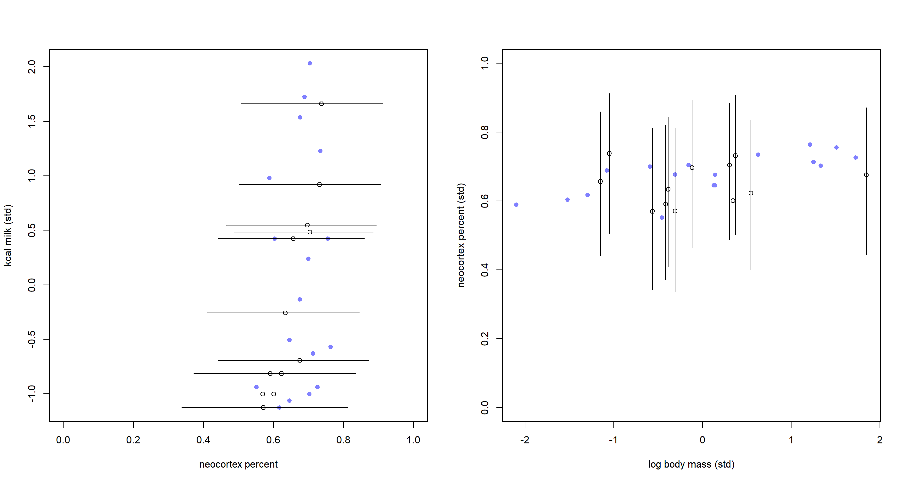
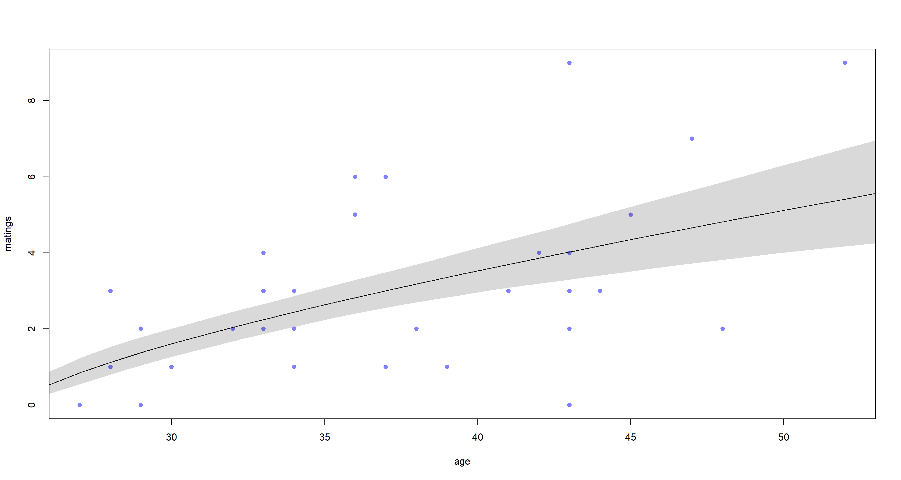
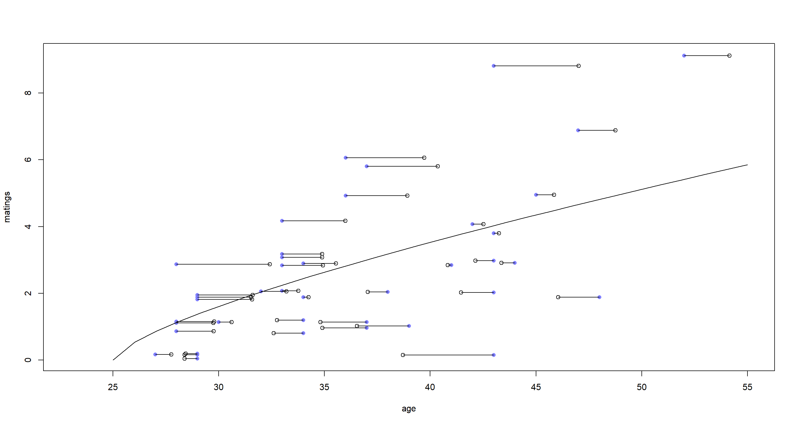
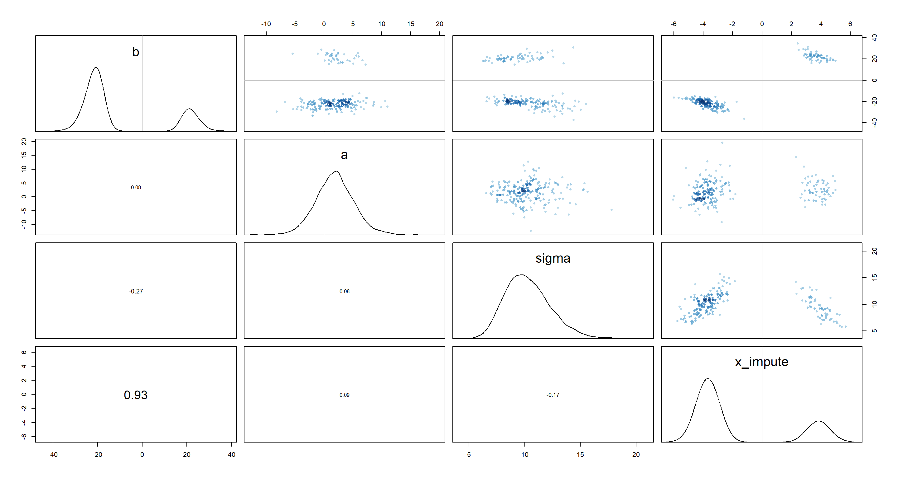
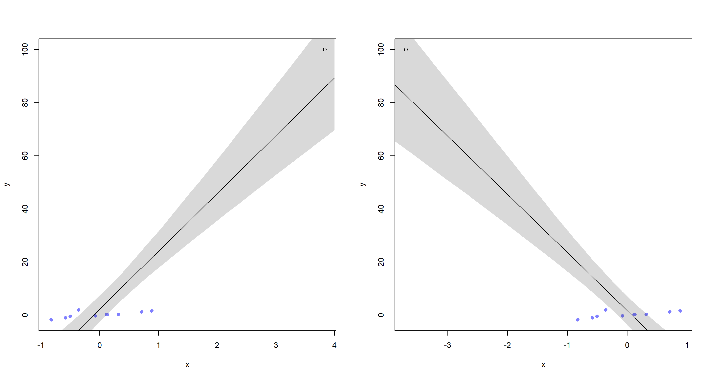
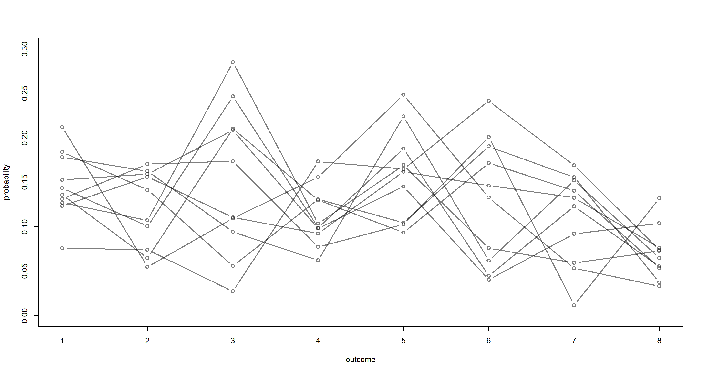
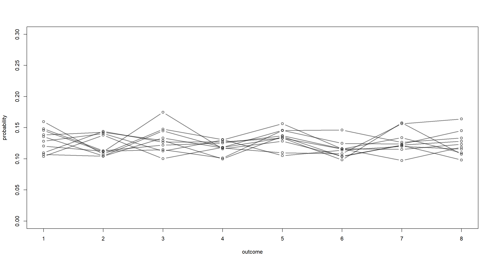

Chapter 15
Missing Data and Other Opportunities
Material
Introduction
These are answers and solutions to the exercises at the end of chapter 15 in Satistical Rethinking 2 by Richard McElreath. I have created these notes as a part of my ongoing involvement in the AU Bayes Study Group. Much of my inspiration for these solutions, where necessary, has been obtained from
the solutions provided to instructors by Richard McElreath himself.
R Environment
For today’s exercise, I load the following packages:
library(rethinking)
library(gtools)
Easy Exercises
Practice E1
Question: Rewrite the Oceanic tools model (from Chapter 11) below so that it assumes measured error on the log population sizes of each society. You don’t need to fit the model to data. Just modify the mathematical formula below. $$T_i ∼ Poisson(µ_i)$$ $$log(µ_i) = α + β*log(P_i)$$ $$α ∼ Normal(0, 1.5)$$ $$β ∼ Normal(0, 1)$$
Answer: The population variable ($P_i$) is a predictor in this model. In order to estimate/account for measurement error in a predictor variable, all we need to do is add a distribution to the observed values ($P^\star_i$) with a given error ($σ_P$):
$$log(P_i) ∼ Normal(P^\star_i, σ_P)$$
The final model specification combines the above line with the previous model specification and substitutes $P^\star_i$ in place of $P_i$:
$$T_i ∼ Poisson(µ_i)$$
$$log(µ_i) = α + β* P^\star_i $$
$$log(P_i) ∼ Normal(P^\star_i, σ_P)$$
$$α ∼ Normal(0, 1.5)$$
$$β ∼ Normal(0, 1)$$
$$σ_P \sim Exponential(1)$$
Of course, we also need a prior for $σ_P$. I don’t know enough about the data to take a good educated guess for this parameter and so I just run the usual prior for standard deviations used in the book.
Practice E2
Question: Rewrite the same model so that it allows imputation of missing values for log population. There aren’t any missing values in the variable, but you can still write down a model formula that would imply imputation, if any values were missing.
Answer: Imputation comes into play when measurement error is so intense that we have missing data - “missing data is grown-up measurement error”. The trick with missing data is to establish adaptive priors for the missing data which is informed by the observations for which we do have data:
$$T_i ∼ Poisson(µ_i)$$
$$log(µ_i) = α + β * P^\star_i$$
$$P^\star_i ∼ Normal(\overline{ P^\star }, σ_P)$$
$$α ∼ Normal(0, 1.5)$$ $$β ∼ Normal(0, 1)$$ $$P^\star \sim Normal(0, 1)$$ $$σ_P \sim Exponential(1)$$
With the new specification, values of $P^\star_i$ (observed log-populations) are either assumed to be data or parameters according to whether data is present for observation $i$ or not.
Medium Exercises
Practice M1
Question: Using the mathematical form of the imputation model in the chapter, explain what is being assumed about how the missing values were generated.
Answer: As a reminder, the mathematical form of the imputation model in the chapter is as follows:
$$K_i ∼ Normal(µ_i, σ)$$ $$µ_i = α + β_BB_i + β_M * log(M_i)$$ $$B_i ∼ Normal(ν, σ_B)$$ $$α ∼ Normal(0, 0.5)$$ $$β_B ∼ Normal(0, 0.5)$$ $$β_M ∼ Normal(0, 0.5)$$ $$σ ∼ Exponential(1)$$ $$ν ∼ Normal(0.5, 1)$$ $$σ_B ∼ Exponential(1)$$
The assumption about which distribution our predictor with missing data ($B$) does not contain any information about individual cases. It simply just assumes that missing values are randomly placed across the cases. As such, the model assumes that there is no causation at play for how the data came to be missing/not reported, but only states that information that is missing follows a certain distribution which is the same distribution against which to test the data which we do have.
Practice M2
Question: In earlier chapters, we threw away cases from the primate milk data, so we could use the neocortex variable. Now repeat the WAIC model comparison example from Chapter 6, but use imputation on the neocortex variable so that you can include all of the cases in the original data. The simplest form of imputation is acceptable. How are the model comparison results affected by being able to include all of the cases?
Answer: Unfortunately, chapter 6 does not include a neocortex model in the version of the book I am working with and pulling these exercises from. However, chapter 5 does. To begin with this exercise, I load the data and prepare it the same way we did back in chapter 5, by standardising our variables for energy content of milk (K), and body mass (M). Contrary to chapter 5, I do not standardise the neocortex portion (P), but leave it as a proportion between 0 and 1:
data(milk)
d <- milk
d$neocortex.prop <- d$neocortex.perc / 100
d$logmass <- log(d$mass)
## Incomplete cases allowed
dat_list <- list(
K = standardize(d$kcal.per.g),
P = d$neocortex.prop,
M = standardize(d$logmass)
)
Why did I set the neocortex variable (P) to be non-standardised? So I could use priors more readily and make sure this proportion always stays between 0 and 1 - everything outside these bounds would be biological nonsense.
With the data ready, we can now run our three models from chapter 5, but this time, in a way so as to account for missing data:
## Mass effect (not the video game franchise); no imputation needed here
m_M2_5.6 <- ulam(
alist(
K ~ dnorm(mu, sigma),
mu <- a + bM * M,
a ~ dnorm(0, 0.2),
bM ~ dnorm(0, 0.5),
sigma ~ dexp(1)
),
data = dat_list[-2], chains = 4, cores = 4, iter = 2000, log_lik = TRUE
)
## Neocortex effect
m_M2_5.5 <- ulam(
alist(
K ~ dnorm(mu, sigma),
mu <- a + bP * (P - 0.67), # 0.67 is the average value of P --> Intercept now represents K at average P
P ~ dbeta2(nu, theta), # bound between 0 and 1, but wide
nu ~ dbeta(2, 2), # bound between 0 and 1
a ~ dnorm(0, 0.2), # same as before
bP ~ dnorm(0, 10), # another wide prior, since there is little variation in values of P
theta ~ dexp(1), # standard stdev prior
sigma ~ dexp(1), # same as before
vector[12]:P_impute ~ uniform(0, 1) # there are 12 NA-values for P, we bound them between 0 and 1
),
data = dat_list, chains = 4, cores = 4, iter = 2000, log_lik = TRUE
)
## Both predictors
m_M2_5.7 <- ulam(
alist(
K ~ dnorm(mu, sigma),
mu <- a + bP * (P - 0.67) + bM * M, # 0.67 is the average value of P --> Intercept now represents K at average P
P ~ dbeta2(nu, theta), # bound between 0 and 1, but wide
nu ~ dbeta(2, 2), # bound between 0 and 1
a ~ dnorm(0, 0.2), # same as before
bM ~ dnorm(0, 0.5), # same as before
bP ~ dnorm(0, 10), # another wide prior, since there is little variation in values of P
theta ~ dexp(1), # standard stdev prior
sigma ~ dexp(1), # same as before
vector[12]:P_impute ~ uniform(0, 1) # there are 12 NA-values for P, we bound them between 0 and 1
),
data = dat_list, chains = 4, cores = 4, iter = 2000, log_lik = TRUE
)
All three models are compiled. Time to compare how they perform:
compare(m_M2_5.5, m_M2_5.6, m_M2_5.7)
## WAIC SE dWAIC dSE pWAIC weight
## m_M2_5.7 79.50850 5.831506 0.000000 NA 4.565835 0.74491310
## m_M2_5.6 82.17410 5.870788 2.665598 1.455532 1.678415 0.19646189
## m_M2_5.5 84.59271 5.291591 5.084212 3.492726 2.344498 0.05862501
Unsurprisingly, the full model outperforms both one-effect models here. Interestingly, the mass-only model still pulls ahead of the (now imputation-driven) neocortex-only model.
Visualising what our full imputation model sees, we obtain:
post <- extract.samples(m_M2_5.7)
P_impute_mu <- apply(post$P_impute, 2, mean)
P_impute_ci <- apply(post$P_impute, 2, PI)
par(mfrow = c(1, 2))
# P vs K
plot(dat_list$P,
dat_list$K,
pch = 16, col = rangi2,
xlab = "neocortex percent", ylab = "kcal milk (std)", xlim = c(0, 1)
)
miss_idx <- which(is.na(dat_list$P))
Ki <- dat_list$K[miss_idx]
points(P_impute_mu, Ki)
for (i in 1:12) lines(P_impute_ci[, i], rep(Ki[i], 2))
# M vs B
plot(dat_list$M, dat_list$P, pch = 16, col = rangi2, ylab = "neocortex percent (std)", xlab = "log body mass (std)", ylim = c(0, 1))
Mi <- dat_list$M[miss_idx]
points(Mi, P_impute_mu)
for (i in 1:12) lines(rep(Mi[i], 2), P_impute_ci[, i])

These are the same plots as in the book in chapter 15. The only difference is that our imputed neocortex percent values now fall into clearly readable (and sensible) ranges between 0 and 1.
Practice M3
Question: Repeat the divorce data measurement error models, but this time double the standard errors. Can you explain how doubling the standard errors impacts inference?
Answer: Again, I prepare the data the same way as the book does it:
data(WaffleDivorce)
d <- WaffleDivorce
dlist <- list(
D_obs = standardize(d$Divorce),
D_sd = d$Divorce.SE / sd(d$Divorce),
M = standardize(d$Marriage),
A = standardize(d$MedianAgeMarriage),
N = nrow(d)
)
Now, I simply take the model from the book and run it:
m15.1 <- ulam(
alist(
D_obs ~ dnorm(D_true, D_sd),
vector[N]:D_true ~ dnorm(mu, sigma),
mu <- a + bA * A + bM * M,
a ~ dnorm(0, 0.2),
bA ~ dnorm(0, 0.5),
bM ~ dnorm(0, 0.5),
sigma ~ dexp(1)
),
data = dlist, chains = 4, cores = 4
)
Now that we have our baseline model, it is time to double the standard error variable D_sd:
m_M3 <- ulam(
alist(
D_obs ~ dnorm(D_true, D_sd * 2.0),
vector[N]:D_true ~ dnorm(mu, sigma),
mu <- a + bA * A + bM * M,
a ~ dnorm(0, 0.2),
bA ~ dnorm(0, 0.5),
bM ~ dnorm(0, 0.5),
sigma ~ dexp(1)
),
data = dlist, chains = 4, cores = 4, iter = 4000
)
Let’s compare the two models for now and see what is happening:
precis(m15.1)
## mean sd 5.5% 94.5% n_eff Rhat4
## a -0.05218494 0.09615369 -0.2026636 0.1001795 1835.1415 1.001424
## bA -0.61413500 0.16450611 -0.8828791 -0.3543928 916.8593 1.002451
## bM 0.05837404 0.16475940 -0.2017307 0.3267334 961.6816 1.002555
## sigma 0.58800945 0.10284935 0.4284475 0.7570348 784.5056 1.000690
precis(m_M3)
## mean sd 5.5% 94.5% n_eff Rhat4
## a -0.1177004 0.1007595 -0.27064731 0.04738969 401.47170 1.008286
## bA -0.6323619 0.1522011 -0.88505387 -0.38786285 510.81804 1.015609
## bM 0.2072101 0.1808927 -0.08675262 0.47906692 420.57867 1.022198
## sigma 0.1541612 0.1131281 0.02439099 0.36471832 97.19502 1.065839
Oof. Without going into any detail on the parameter estimates, I have to point out that I don’t like the effective sample sizes (n_eff) on our new model one bit. They are much, MUCH smaller than those of our baseline model. This highlights that out second model struggled with efficient exploration of posterior parameter space. I reckon this is a result of the increased standard deviation making the posterior landscape less easy to identify.
One way to work around this issue is to rewrite the model in a non-centred parametrisation:
m_M3B <- ulam(
alist(
D_obs ~ dnorm(mu + z_true * sigma, D_sd * 2.0),
vector[N]:z_true ~ dnorm(0, 1), # gotten rid of the prior dependency here
mu <- a + bA * A + bM * M,
a ~ dnorm(0, 0.2),
bA ~ dnorm(0, 0.5),
bM ~ dnorm(0, 0.5),
sigma ~ dexp(1)
),
data = dlist, chains = 4, cores = 4, iter = 4000,
control = list(max_treedepth = 14)
)
And now, let’s compare these again:
precis(m15.1)
## mean sd 5.5% 94.5% n_eff Rhat4
## a -0.05218494 0.09615369 -0.2026636 0.1001795 1835.1415 1.001424
## bA -0.61413500 0.16450611 -0.8828791 -0.3543928 916.8593 1.002451
## bM 0.05837404 0.16475940 -0.2017307 0.3267334 961.6816 1.002555
## sigma 0.58800945 0.10284935 0.4284475 0.7570348 784.5056 1.000690
precis(m_M3B)
## mean sd 5.5% 94.5% n_eff Rhat4
## a -0.1185044 0.09953924 -0.2778272 0.03741466 10901.282 0.9996237
## bA -0.6444853 0.16468812 -0.9085568 -0.37653366 7171.900 0.9996660
## bM 0.1948245 0.19042617 -0.1056664 0.50037111 8322.124 1.0000969
## sigma 0.1431878 0.10844390 0.0117172 0.34538107 4706.223 0.9998725
Nice. That got rid off our issues of non-effective sampling of posteriors. Now we can actually compare the model results. The biggest difference between these two models is found in the estimates for bM (the effect of marriage rate on divorce rate) and sigma (the standard deviation of the normal distribution from which the divorce rates are pulled). By increasing the standard error, we have effectively allowed individual states to exert much greater influence on the regression slope estimates thus shifting the result around.
It is also worth pointing out right now that the non-centred model performs much more effective sampling, but the parameter estimates are ultimately the same irrespective of parametrisation in this example.
Hard Exercises
Practice H1
Question: The data in data(elephants) are counts of matings observed for bull elephants of differing ages. There is a strong positive relationship between age and matings. However, age is not always assessed accurately. First, fit a Poisson model predicting MATINGS with AGE as a predictor. Second, assume that the observed AGE values are uncertain and have a standard error of $\pm$ 5 years. Re-estimate the relationship between MATINGS and AGE, incorporating this measurement error. Compare the inferences of the two models.
Answer: First, I load the data and take a glance at its contents:
data(elephants)
d <- elephants
str(d)
## 'data.frame': 41 obs. of 2 variables:
## $ AGE : int 27 28 28 28 28 29 29 29 29 29 ...
## $ MATINGS: int 0 1 1 1 3 0 0 0 2 2 ...
Now we can run some models. Before we get started, it is worth pointing out that there are a multitude of ways in which age could influence number of matings - exponential, logarithmic, poisson, etc. Here, I run with a poisson-approach. If this were a real-world research problem, I should probably test all three variations of the model. Alas, ain’t nobody got time fo' that in an exercise.
The data starts with AGE values at 27. This suggests to me that this must be roughly around when elephants reach sexual maturity and will start to mate. Hence, I subtract 25 from all AGE values in my model - just to be safe and interpret the number of matings as “number of matings since reaching sexual maturity”:
## Basic Model without uncertainty:
m_H1_A <- ulam(
alist(
MATINGS ~ dpois(lambda),
lambda <- exp(a) * (AGE - 25)^bA,
a ~ dnorm(0, 1),
bA ~ dnorm(0, 1)
),
data = d, chains = 4, cores = 4
)
precis(m_H1_A)
## mean sd 5.5% 94.5% n_eff Rhat4
## a -0.6922235 0.3429011 -1.2307922 -0.1347450 388.4313 0.9986860
## bA 0.7191531 0.1353220 0.5000447 0.9213017 379.1290 0.9988198
Again, another not-so-efficient sampling model. How does it see the relationship between AGE and MATINGS?
# ages in the data range from 27 to 53
A_seq <- seq(from = 25, to = 55, length.out = 30)
lambda <- link(m_H1_A, data = list(AGE = A_seq))
lambda_mu <- apply(lambda, 2, mean)
lambda_PI <- apply(lambda, 2, PI)
plot(d$AGE, d$MATINGS,
pch = 16, col = rangi2,
xlab = "age", ylab = "matings"
)
lines(A_seq, lambda_mu)
shade(lambda_PI, A_seq)

That’s a pretty reliably positive relationship. Older elephants mate more.
On to the measurement error model:
d$AGE0 <- d$AGE - 25 # add the sexual maturity consideration to the data
m_H1_B <- ulam(
alist(
MATINGS ~ dpois(lambda), # same outcome as before
lambda <- exp(a) * AGE_est[i]^bA, # log-scale predictors
AGE0 ~ dnorm(AGE_est, 5), # Gaussian distribution with error 5
vector[41]:AGE_est ~ dunif(0, 50), # prior for individual observed ages
a ~ dnorm(0, 1),
bA ~ dnorm(0, 1)
),
data = d, chains = 4, cores = 4
)
precis(m_H1_B)
## mean sd 5.5% 94.5% n_eff Rhat4
## a -0.7742834 0.4801451 -1.6114596 -0.04176099 1049.624 1.003248
## bA 0.7360628 0.1803691 0.4590526 1.05008454 1060.533 1.003109
Interestingly enough, the estimate of bA has not changed between these models. Why? Because we added completely symmetric measurement error that remains unchanged across all ages of our elephants. Hence, we don’t end up biasing our model because the error in the data is not biased (at least we assume so).
Let’s finish this off by looking at what our model expects the ages to be like for different matings:
post <- extract.samples(m_H1_B) # extract samples
AGE_est <- apply(post$AGE_est, 2, mean) + 25 # add 25 back to ages
MATINGS_j <- jitter(d$MATINGS) # jitter MATINGS for better readability
plot(d$AGE, MATINGS_j, pch = 16, col = rangi2, xlab = "age", ylab = "matings", xlim = c(23, 55)) # observed ages
points(AGE_est, MATINGS_j) # estimated ages
for (i in 1:nrow(d)) lines(c(d$AGE[i], AGE_est[i]), rep(MATINGS_j[i], 2)) # shrinkage lines
lines(A_seq, lambda_mu) # linear regression from previous model

The blue dots represent the observed ages, while the open circles depict the estimated true ages from our model. We see some shrinkage. Fascinatingly, the shrinkage appears to switch direction around the regression line, however. Values above the regression line are shrunk to higher age ranges, while the reverse is true below the regression line. What this means is that the model assumed elephants with unexpectedly high mating numbers for their observed age to be older than our data implies and vice versa.
Practice H2
Question: Repeat the model fitting problem above, now increasing the assumed standard error on AGE. How large does the standard error have to get before the posterior mean for the coefficient on AGE reaches zero?
Answer: To solve this, I just run the model above again, but increase the standard error. I did several times with ever-increasing standard errors. Finally I landed on a standard error of 100:
m_H2 <- ulam(
alist(
MATINGS ~ dpois(lambda),
lambda <- exp(a) * AGE_est[i]^bA,
AGE0 ~ dnorm(AGE_est, 100), # increase standard error here
vector[41]:AGE_est ~ dunif(0, 50),
a ~ dnorm(0, 1),
bA ~ dnorm(0, 1)
),
data = d, chains = 4, cores = 4
)
precis(m_H2)
## mean sd 5.5% 94.5% n_eff Rhat4
## a -0.3487762 1.1358880 -1.7265552 1.9908366 6.393092 1.409652
## bA 0.4246873 0.3829174 -0.4010691 0.8592536 5.932438 1.454539
Albeit not having reached 0, the mean estimate of bA is closer to 0 now and the percentile interval around it is so large that we would not be able to identify the effect here.
Practice H3
Question: The fact that information flows in all directions among parameters sometimes leads to rather unintuitive conclusions. Here’s an example from missing data imputation, in which imputation of a single datum reverses the direction of an inferred relationship. Use these data:
set.seed(100)
x <- c(rnorm(10), NA)
y <- c(rnorm(10, x), 100)
d <- list(x = x, y = y)
These data comprise 11 cases, one of which has a missing predictor value. You can quickly confirm that a regression of $y$ on $x$ for only the complete cases indicates a strong positive relationship between the two variables. But now fit this model, imputing the one missing value for $x$:
$$y_i ∼ Normal(µ_i, σ)$$ $$µ_i = α + βx_i$$ $$x_i ∼ Normal(0, 1)$$ $$α ∼ Normal(0, 100)$$ $$β ∼ Normal(0, 100)$$ $$σ ∼ HalfCauchy(0, 1)$$
What has happened to the posterior distribution of $β$? Be sure to inspect the full density. Can you explain the change in inference?
Answer: Interestingly, the rethinking functions also work on basic lm objects:
precis(lm(y ~ x, d))
## mean sd 5.5% 94.5%
## (Intercept) 0.2412995 0.2774524 -0.2021231 0.6847221
## x 1.4236779 0.5209135 0.5911574 2.2561983
On to the imputation model:
m_H3 <- ulam(
alist(
y ~ dnorm(mu, sigma),
mu <- a + b * x,
x ~ dnorm(0, 1),
c(a, b) ~ dnorm(0, 100),
sigma ~ dexp(1)
),
data = d, chains = 4, cores = 4, iter = 4000,
control = list(adapt_delta = 0.99)
)
precis(m_H3)
## mean sd 5.5% 94.5% n_eff Rhat4
## b -10.972553 19.300190 -27.944113 24.271345 2.066259 5.340370
## a 1.869767 3.346405 -3.361028 7.168704 4172.209841 1.003406
## sigma 10.294366 2.054437 7.383010 13.871396 75.915321 1.033777
Well those percentile intervals look bad. The joint posterior distributions might help solve this mystery:
pairs(m_H3)

We have a few bi-modal distributions which place the plausible values for b and x_impute either strongly in the negative or strongly in the positive realm. This feels like the issue of unidentifiable parameters all over again.
The outcome variable value for which we are missing the predictor variable value is very extreme given the range of all other outcome variable values. This means, we can flip our predictor value to either extreme and still be consistent with the data and model thus forcing the regression line to be either positive or negative.
Let’s extract positive and negative regression estimates and their positions in our extracted samples from the posterior:
post <- extract.samples(m_H3)
post_pos <- post
post_neg <- post
for (i in 1:length(post)) {
post_pos[[i]] <- post[[i]][post$b > 0]
post_neg[[i]] <- post[[i]][post$b < 0]
}
With this at hand, we can now compute the two regression lines and plot them:
par(mfrow = c(1, 2))
## positive
x_seq <- seq(from = -2.6, to = 4, length.out = 30)
mu_link <- function(x, post) post$a + post$b * x
mu <- sapply(x_seq, mu_link, post = post_pos)
mu_mu <- apply(mu, 2, mean)
mu_PI <- apply(mu, 2, PI)
x_impute <- mean(post_pos$x_impute)
plot(y ~ x, d, pch = 16, col = rangi2, xlim = c(-0.85, x_impute))
points(x_impute, 100)
lines(x_seq, mu_mu)
shade(mu_PI, x_seq)
## negative
x_seq <- seq(from = -4, to = 4, length.out = 50)
mu <- sapply(x_seq, mu_link, post = post_neg)
mu_mu <- apply(mu, 2, mean)
mu_PI <- apply(mu, 2, PI)
x_impute <- mean(post_neg$x_impute)
plot(y ~ x, d, pch = 16, col = rangi2, xlim = c(-3.7, 0.9))
points(x_impute, 100)
lines(x_seq, mu_mu)
shade(mu_PI, x_seq)
 This should make it obvious just how extreme the outcome variable value is and how our model could agree with either extreme imputed variable.
Practice H4
Question: Some lad named Andrew made an eight-sided spinner. He wanted to know if it is fair. So he spun it a bunch of times, recording the counts of each value. Then he accidentally spilled coffee over the 4s and 5s. The surviving data are summarized below.
| Value | 1 | 2 | 3 | 4 | 5 | 6 | 7 | 8 | | Frequency | 18 | 19 | 22 | ? | ? | 19 | 20 | 22 |
Your job is to impute the two missing values in the table above. Andrew doesn’t remember how many times he spun the spinner. So you will have to assign a prior distribution for the total number of spins and then marginalize over the unknown total. Andrew is not sure the spinner is fair (every value is equally likely), but he’s confident that none of the values is twice as likely as any other. Use a Dirichlet distribution to capture this prior belief. Plot the joint posterior distribution of 4s and 5s.
Answer: First, I enter the data into R:
y <- c(18, 19, 22, NA, NA, 19, 20, 22)
What data do I need to somehow get to for my model?
N- total number of spins
For N, we can say that is no smaller than 120 - the sum of all spins which we have observed outcomes for. The number of spins would be a count variable and so it would make sense to assign a Poisson distribution to them - especially seeing how we lack a sensible upper bound to the total number of spins. So what should our expected value be? Well, from the data above, it would be sensible to expect that the spins for sides 4 and 5 are 20 respectively - this is just a guess. As such, we could set a prior as:
$$N \sim Poisson(40) + 120$$ Why 40 and why 120? 40 is the expected number of missing spins from our data table, 120 defines the lower bound of our total spins. We have data for 120 spins.
Probs- vector of probabilities for each side of the spinner
As for the vector of probabilities, we want to use the Dirichlet prior as outlined by the exercise text. The Dirichlet prior is used for categorical outcomes like these. We know that none of the outcomes is twice as likely as any other. Dirichlet doesn’t give us that control directly, unfortunately. What we can do is simulate:
p <- rdirichlet(1e3, alpha = rep(4, 8))
plot(NULL, xlim = c(1, 8), ylim = c(0, 0.3), xlab = "outcome", ylab = "probability")
for (i in 1:10) lines(1:8, p[i, ], type = "b", col = grau(), lwd = 2)
 It is difficult to judge from this what our prior is assuming and whether our assumption is met. We can identify this numerically though:
twicer <- function(p) {
o <- order(p)
if (p[o][8] / p[o][1] > 2) {
return(TRUE)
} else {
return(FALSE)
}
}
sum(apply(p, 1, twicer))
## [1] 977
Our prior clearly needs to be tighter since our criterion of no category being twice as likely as any other category is being violated quite heavily.
p <- rdirichlet(1e3, alpha = rep(50, 8))
sum(apply(p, 1, twicer))
## [1] 17
That looks much better! Let’s plot that:
plot(NULL, xlim = c(1, 8), ylim = c(0, 0.3), xlab = "outcome", ylab = "probability")
for (i in 1:10) lines(1:8, p[i, ], type = "b", col = grau(), lwd = 2)

N4andN5- the counts of observations of the side 4 and 5, respectively
This is what we want to get to to help Andrew get around his coffee-spillage mishap. What we need to do here is to marginalize over all combinations of 4s and 5s. I will freely admit that I was completely lost here and took the STAN code directly from the solutions by Richard McElreath. Looking at it, there are some loops in here, which I couldn’t have been able to code myself (yet). I have added some comments to indciate what I understood:
code15H7 <- "
data{
int N;
int y[N];
int y_max; // consider at most this many spins for y4 and y5
int S_mean;
}
parameters{
simplex[N] p; // probabilities of each outcome
}
model{
vector[(1+y_max)*(1+y_max)] terms; // all combinations of spins for 4 and 5
int k = 1; // counter to index above vector of combinations
p ~ dirichlet(rep_vector(50, N)); // Dirichlet prior
// loop over possible values for unknown cells 4 and 5
// this code updates posterior of p
for(y4 in 0:y_max){
for(y5 in 0:y_max){
int Y[N] = y; // probability of complete vector of individual spins
Y[4] = y4; // spins for 4s
Y[5] = y5; // spins for 5s
terms[k] = poisson_lpmf(y4+y5|S_mean-120) + multinomial_lpmf(Y|p); // poisson prior for individual spins and multinomial prior for vector of counts conditional on number of spins n and prior p
k = k + 1;
}//y5
}//y4
target += log_sum_exp(terms);
}
generated quantities{ // repeates much of the above to compute posterior probability
matrix[y_max+1, y_max+1] P45; // prob y4, y5 takes joint values
// now compute Prob(y4, y5|p)
{
matrix[(1+y_max), (1+y_max)] terms;
int k = 1;
real Z;
for(y4 in 0:y_max){
for(y5 in 0:y_max){
int Y[N] = y;
Y[4] = y4;
Y[5] = y5;
terms[y4+1, y5+1] = poisson_lpmf(y4+y5|S_mean-120) + multinomial_lpmf(Y|p);
}//y5
}//y4
Z = log_sum_exp(to_vector(terms));
for(y4 in 0:y_max)
for(y5 in 0:y_max)
P45[y4+1, y5+1] = exp(terms[y4+1, y5+1] - Z); // make sure all probabilities sum to 1
}
}
"
Here’s the data that the model needs. STAN doesn’t accept NAs, hence why the NA values below are now encoded as -1:
y <- c(18, 19, 22, -1, -1, 19, 20, 22)
dat <- list(
N = length(y),
y = y,
S_mean = 160,
y_max = 40
)
Finally, let’s run the model and plot some samples from it:
m15H7 <- stan(model_code = code15H7, data = dat, chains = 4, cores = 4)
post <- extract.samples(m15H7)
y_max <- dat$y_max
plot(NULL,
xlim = c(10, y_max - 10), ylim = c(10, y_max - 10),
xlab = "number of 4s", ylab = "number of 5s"
)
mtext("posterior distribution of 4s and 5s")
for (y4 in 0:y_max) {
for (y5 in 0:y_max) {
k <- grau(mean(post$P45[, y4 + 1, y5 + 1]) / 0.01)
points(y4, y5, col = k, pch = 16, cex = 1.5)
}
}

From this, it is apparent that 20 spins for the 4s and 5s respectively is the most likely and that there is a negative correlation between these respective spins - more spins resulting in side 4 make less spins resulting in side 5 more likely.
Andrew - don’t spill your coffee again.
Session Info
sessionInfo()
## R version 4.0.5 (2021-03-31)
## Platform: x86_64-w64-mingw32/x64 (64-bit)
## Running under: Windows 10 x64 (build 19043)
##
## Matrix products: default
##
## locale:
## [1] LC_COLLATE=English_United Kingdom.1252 LC_CTYPE=English_United Kingdom.1252 LC_MONETARY=English_United Kingdom.1252 LC_NUMERIC=C
## [5] LC_TIME=English_United Kingdom.1252
##
## attached base packages:
## [1] parallel stats graphics grDevices utils datasets methods base
##
## other attached packages:
## [1] gtools_3.8.2 rethinking_2.13 rstan_2.21.2 ggplot2_3.3.6 StanHeaders_2.21.0-7
##
## loaded via a namespace (and not attached):
## [1] Rcpp_1.0.7 mvtnorm_1.1-1 lattice_0.20-41 prettyunits_1.1.1 ps_1.6.0 assertthat_0.2.1 digest_0.6.27 utf8_1.2.1 V8_3.4.1 R6_2.5.0
## [11] backports_1.2.1 stats4_4.0.5 evaluate_0.14 coda_0.19-4 highr_0.9 blogdown_1.3 pillar_1.6.0 rlang_0.4.11 curl_4.3.2 callr_3.7.0
## [21] jquerylib_0.1.4 R.utils_2.10.1 R.oo_1.24.0 rmarkdown_2.7 styler_1.4.1 stringr_1.4.0 loo_2.4.1 munsell_0.5.0 compiler_4.0.5 xfun_0.22
## [31] pkgconfig_2.0.3 pkgbuild_1.2.0 shape_1.4.5 htmltools_0.5.1.1 tidyselect_1.1.0 tibble_3.1.1 gridExtra_2.3 bookdown_0.22 codetools_0.2-18 matrixStats_0.61.0
## [41] fansi_0.4.2 crayon_1.4.1 dplyr_1.0.5 withr_2.4.2 MASS_7.3-53.1 R.methodsS3_1.8.1 grid_4.0.5 jsonlite_1.7.2 gtable_0.3.0 lifecycle_1.0.0
## [51] DBI_1.1.1 magrittr_2.0.1 scales_1.1.1 KernSmooth_2.23-18 RcppParallel_5.1.2 cli_3.0.0 stringi_1.5.3 bslib_0.2.4 ellipsis_0.3.2 generics_0.1.0
## [61] vctrs_0.3.7 rematch2_2.1.2 tools_4.0.5 R.cache_0.14.0 glue_1.4.2 purrr_0.3.4 processx_3.5.1 yaml_2.2.1 inline_0.3.17 colorspace_2.0-0
## [71] knitr_1.33 sass_0.3.1